california wine country
high ridge ranch
What is it like to acquire a home so beautiful, refined, real, and historic that a trip to Tuscany no longer assaults your fantasies with just how beautiful your life could be? Imagine being the owner of a home that defines an even more exquisite standard than your many past travels to the fabulous hotels, resorts and world class inns that you thought were how you wanted to live. So much so that you have come to prefer staying at home.
Beauty, grace and absolute integrity are so rare that even at the highest levels of art, architecture and interior design one can seldom find an entire expression, every detail coalescing into a living, breathing home where all is complete, full, and mature. Villa Montana is such a rare place. To enter this home is a step back in time through the thousand year old guard tower surrounded by a moat and drawbridge, through the Gallery to the Great Hall and Loggia oriented to stunning and poetic views from every space at every angle. Indoor and outdoor experiences are so masterfully integrated that it becomes irrelevant whether one is indoors or out.
A country estate in which no detail has been overlooked, no compromises were ever made in the creation of this remarkable expression of grace, beauty and quality in service of the good life in the California Wine Country. It is a jewel box where its uniquely beautiful natural place, masterful gardens, historical architecture, art and antiquities coalesce to create an alive, refined, relaxed environment in celebration of the glorious California food and wine culture.
Every element of this home is one-of-a-kind. Every aspect is hand crafted, whether from artisans hundreds of years ago or modern day masters in whom the ancient skills have lived through and been given new life. No stone was laid without careful attention to the overall effect. Massive hand hewn beams, intricate terra cotta, or vaulted plaster ceilings are a constantly surprising expression. Ancient stone and terra cotta floors imported from Italy and France support massive antique stone and carved Baroque wood portals and artifact Italian fireplaces. This home is filled with authentic plaster frescoes by master French artisans. Every surface has been patinated to appear hundreds of years old.
Imagine awakening in the morning to the fog blanketing the world-class wine producing Knights Valley below. To the blue, green and purple Mount Saint Helena rising majestically to the east in an ever changing tapestry of dramatic clouds, sun and swirling mist. To the west, the coast range is bathed in golden light morning and afternoon. And to the north there is a hundred mile view with no sign of man's handiworks.
There is simply no better Wine Country home in this living, breathing unity of light, love and energy resting in joyful cohabitation with its stunning natural setting.
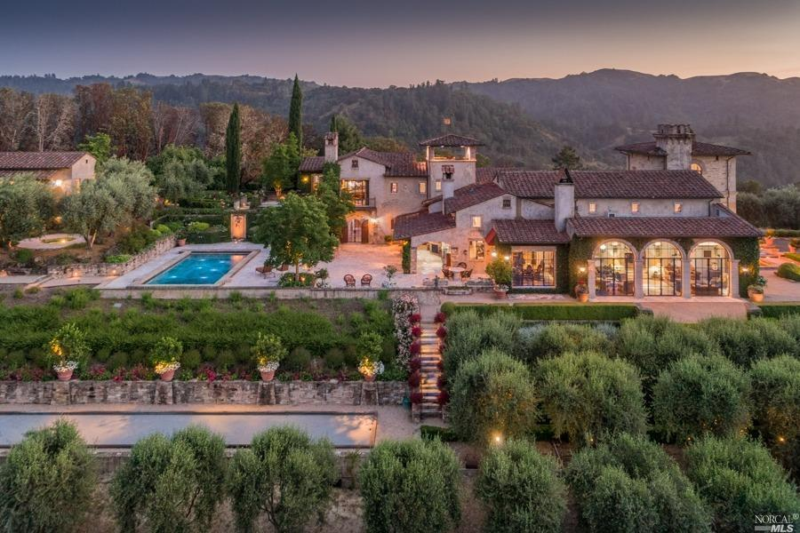
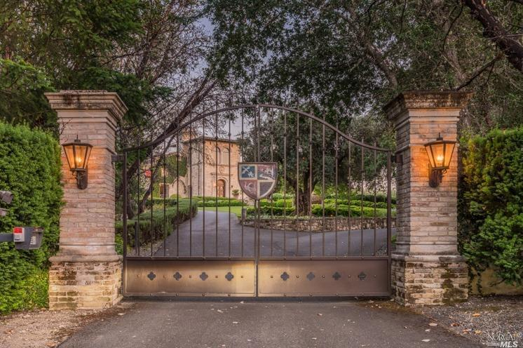
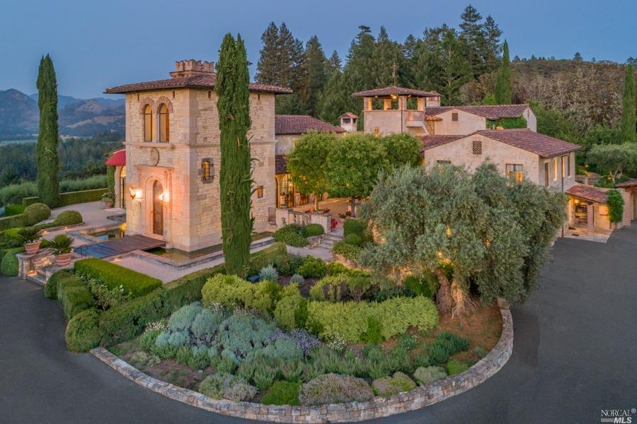
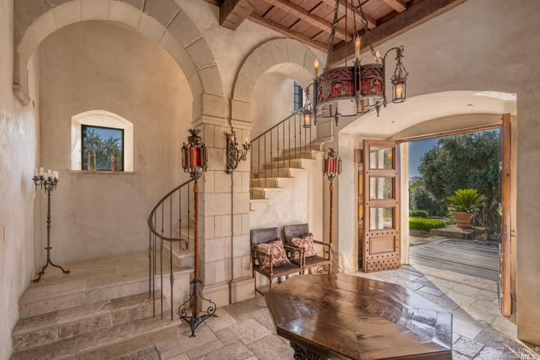
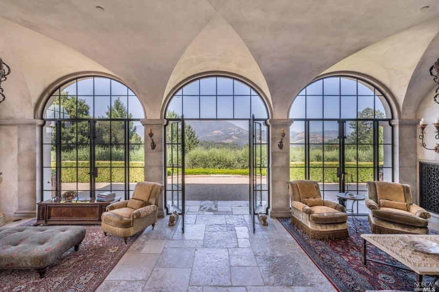
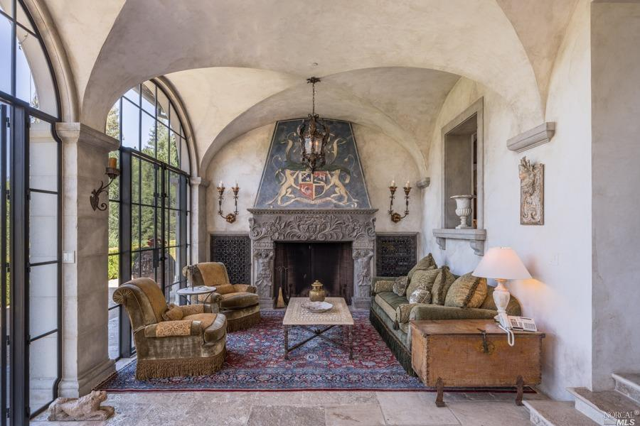
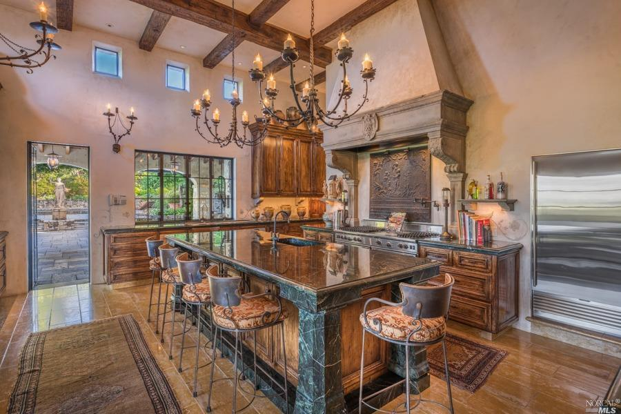
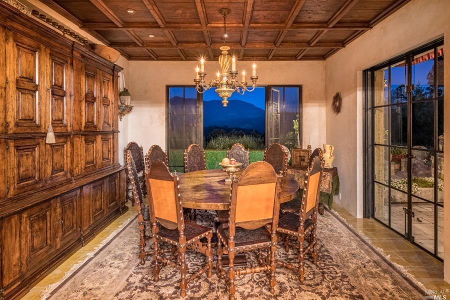
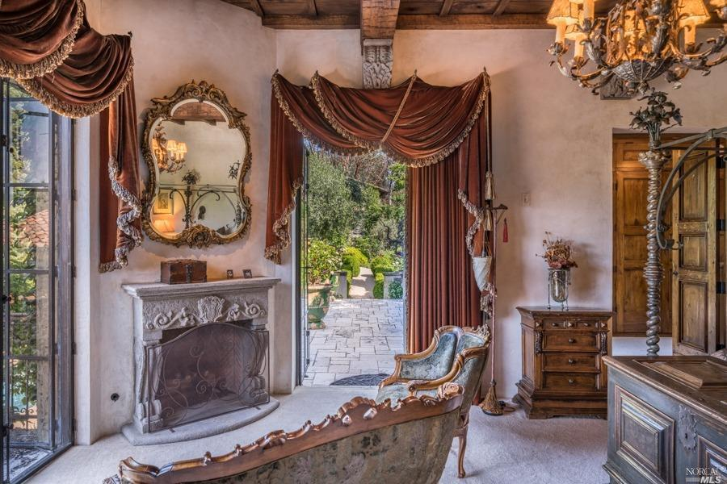

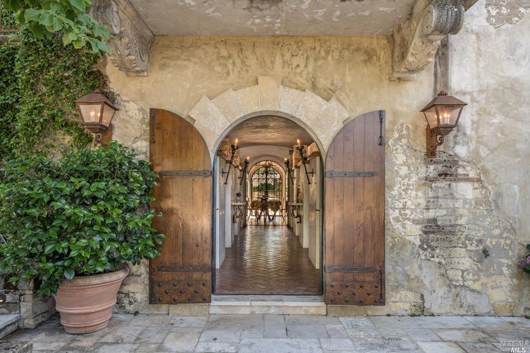
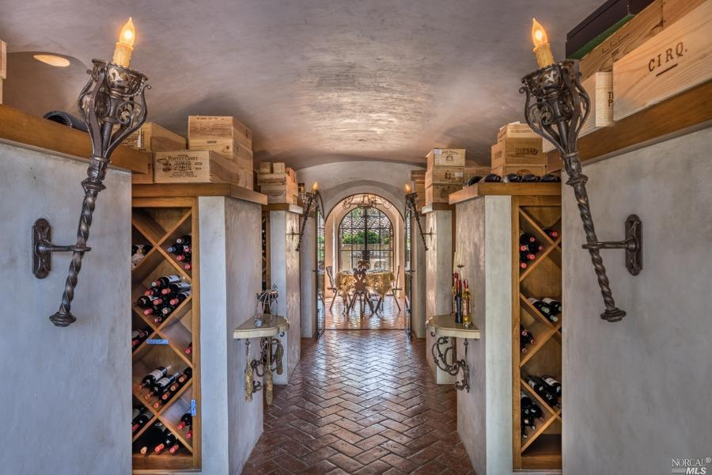
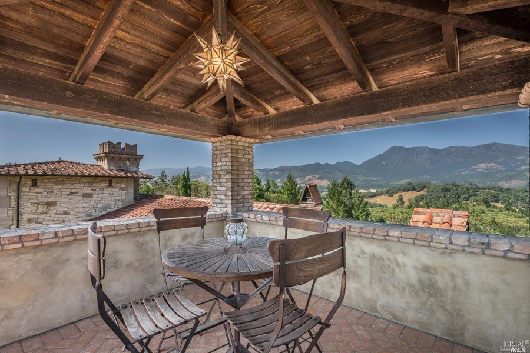
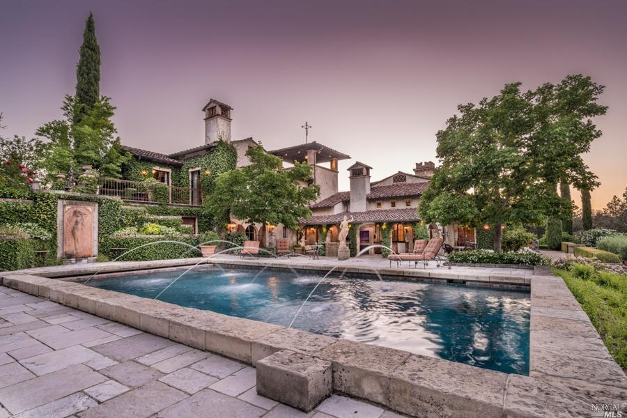
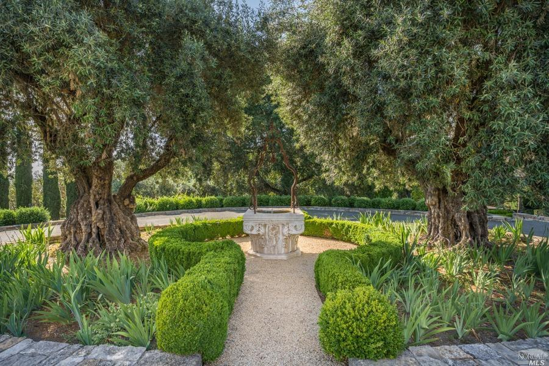
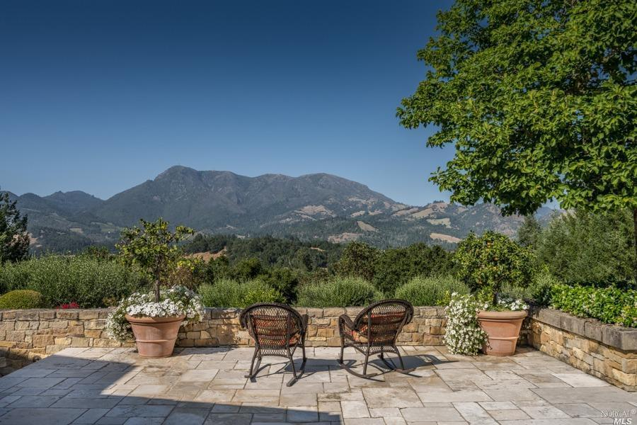
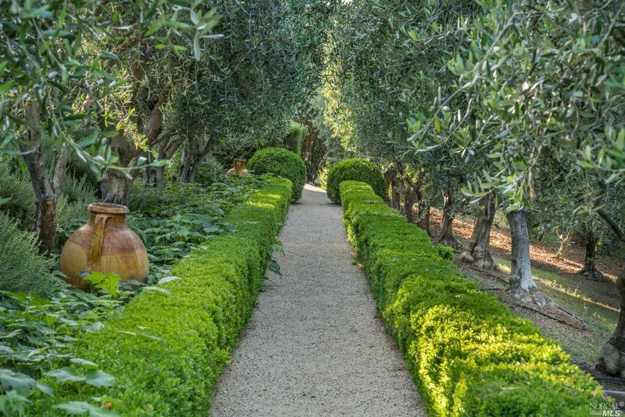
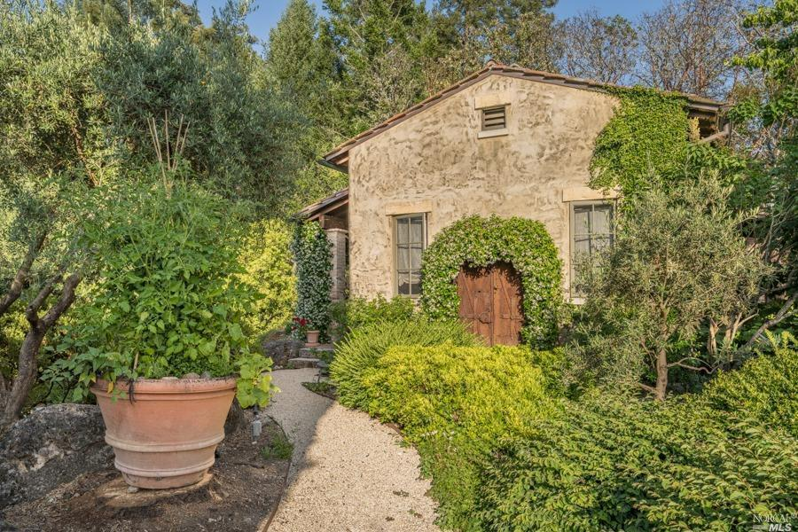
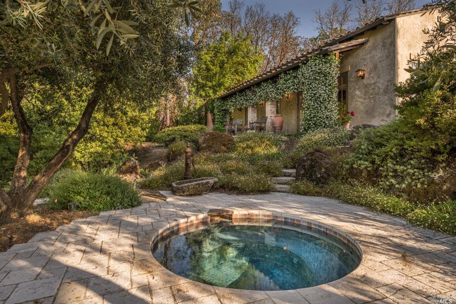
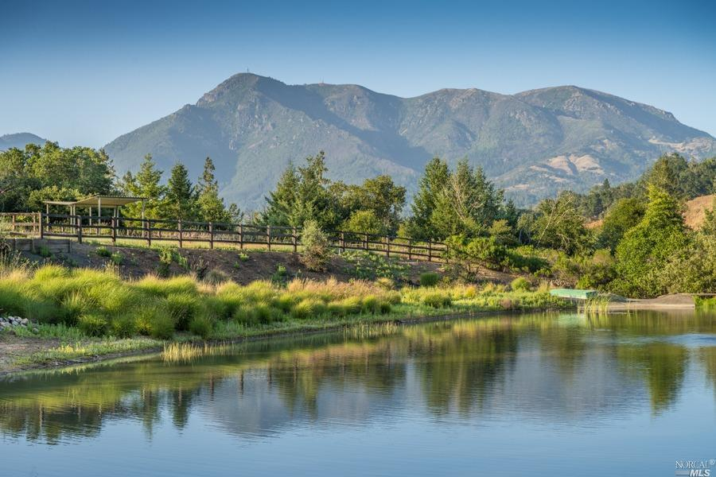
photographs from the villa montana listing gallery.